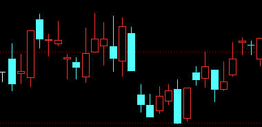
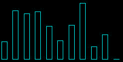
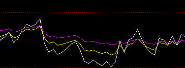
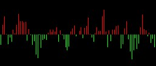

目前支持的序列类型
图表目前支持以下几种类型的序列：
- 蜡烛图
- 直方图
- 折线图
- 正负图
由以下基础枚举值标示：/*!
* \enum sia::chartbase::SeriesType
*
* 图表序列类型
*/
enum class BASE_API SeriesType {
kBlank = 0,
kLine = 1,
kBar = 2,
kUpdownBar = 3,
kCandle = 4,
};
蜡烛图（Candle）

绘制蜡烛图需要提供四个固定的数据名：
- open
- high
- low
- close
直方图（Bar）

直方图可以定制
- 显示宽度
- 是否填充绘制
- 颜色
折线图（Line）

折线图可以定制：
- 颜色
- 是否反锯齿（anti-alias）
正负图（UpDown）

正负图以0值分割显示，大于0的值向上绘制，小于0的值向下绘制。
序列的外观
请参考：序列外观定制
其他参考